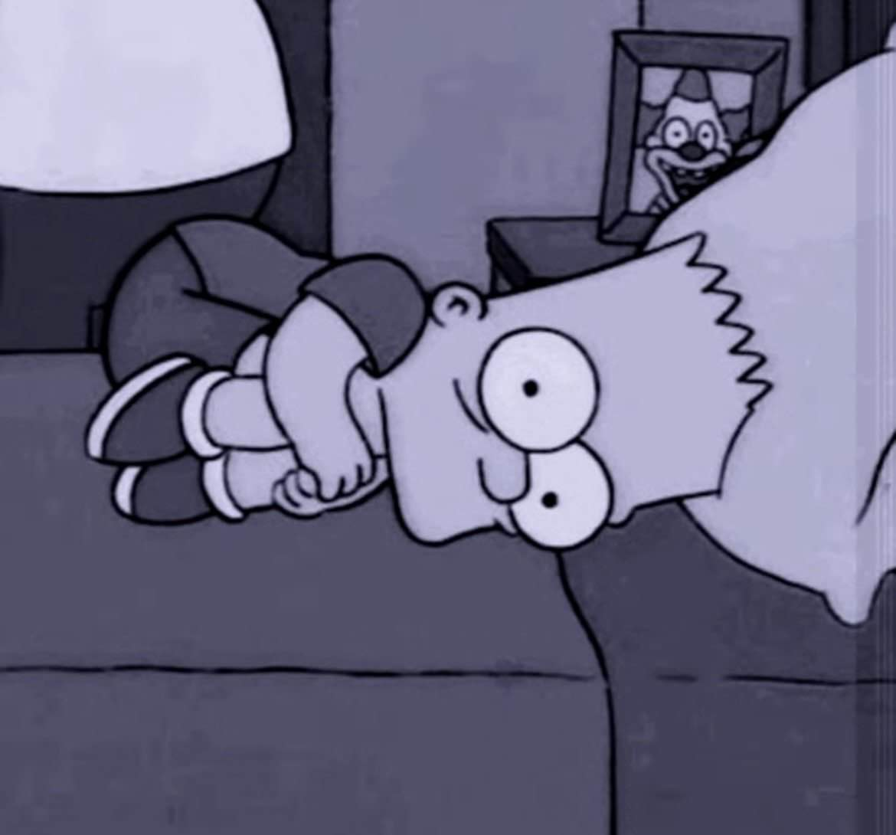

Title
🔗 GitHub 이동
🎵 음원 추출하기 (준비중)
🗂️ 파일 변환 (준비중)
유사도
bot 실행 (준비중)
여기에 자료가 들어갑니다 1
여기에 자료가 들어갑니다 2
여기에 자료가 들어갑니다 3
☰
홈으로
Unwaved Heart
-
50%
+

ABOUT ME - Classic
이름:
김현우
생년월일:
2004.12.28
연락처:
010-6756-2344
이메일:
rlagusdn04@korea.ac.kr